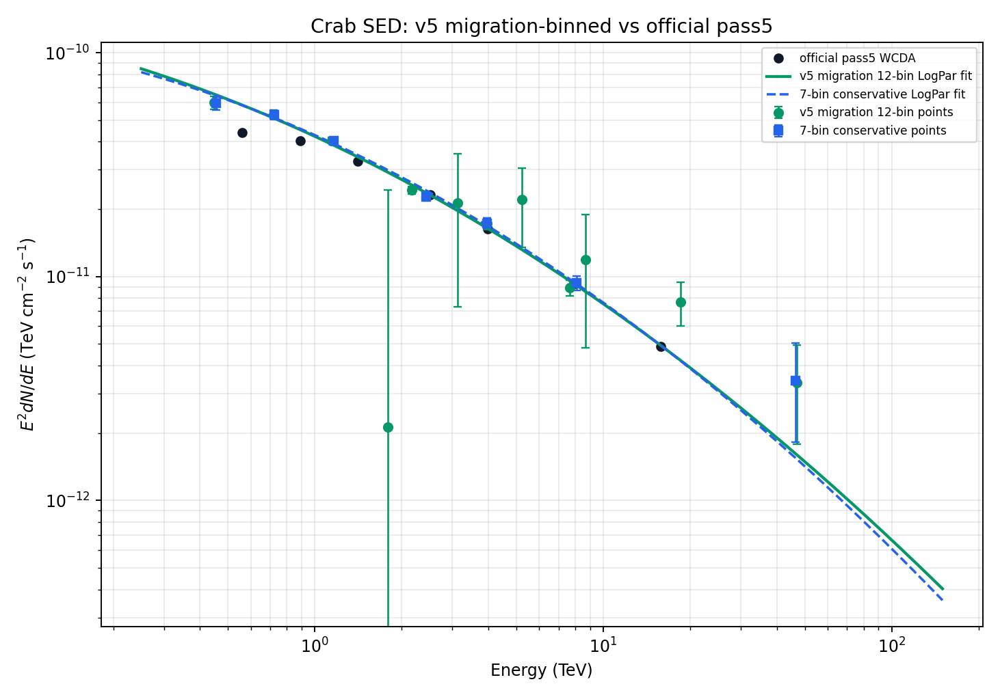
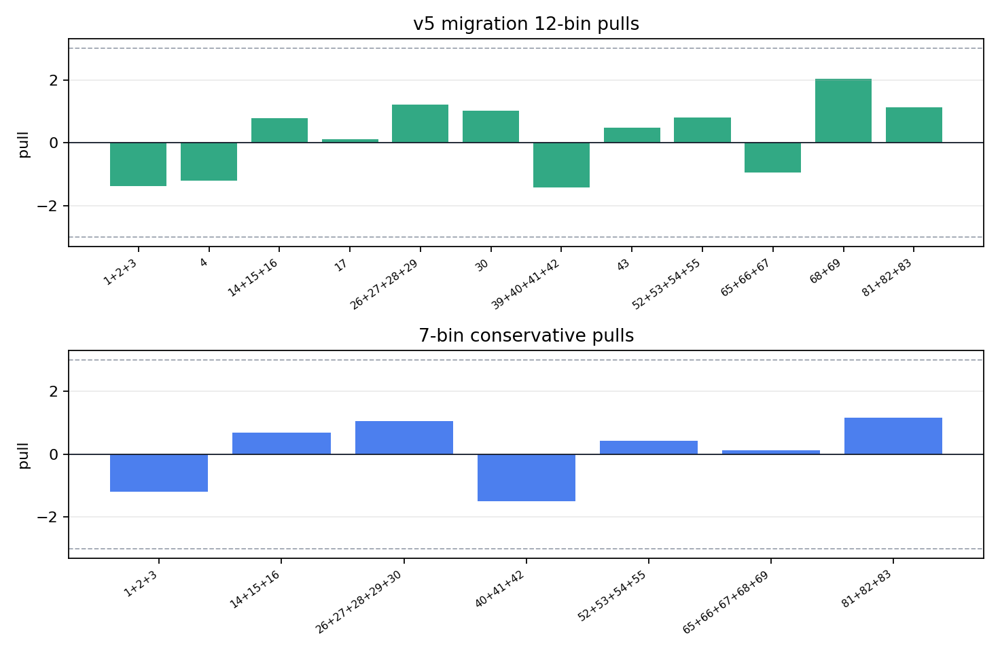
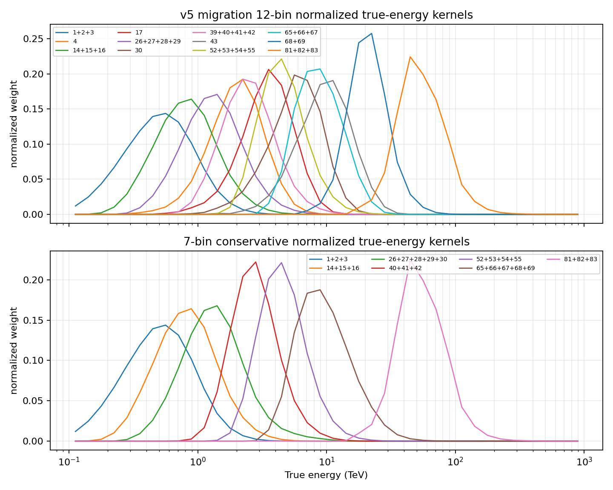

Crab SED v5 MC-Migration Binning Comparison
This report is independent of previous v4/v5 reports. It uses the current annnorm background and aperture-conditioned Stage A response, then changes only the final SED binning layer.
LogPar chi2/ndof 4.503
LogPar chi2/ndof 1.745; restored 4/17/39/43
LogPar chi2/ndof 1.698
aperture-conditioned Stage A response
1. Binning Rationale
The binning diagnostic uses the response-weighted true-energy kernel K_cell(E_true) = A_eff(cell, E_true, theta) x Crab theta exposure x assumed Crab spectrum. Adjacent fine cells are merged when their normalized kernels overlap strongly.
The overlap diagnostic is overlap(i,j) = sum_E min(K_i_norm(E), K_j_norm(E)). A large value means two fine cells are not independent measurements of distinct true-energy ranges; treating both as separate final SED points can create unstable flux allocation and large pulls.
| fit | chi2 | ndof | chi2/ndof | max |pull| | phi0 | alpha | beta |
|---|---|---|---|---|---|---|---|
| fine 30 cells | 121.58 | 27 | 4.503 | 5.658 | 2.34019e-12 | 2.7488 | 0.13458 |
| v5 migration 12-bin | 15.707 | 9 | 1.745 | 2.031 | 2.25623e-12 | 2.7409 | 0.06671 |
| 7-bin conservative | 6.7918 | 4 | 1.698 | 1.494 | 2.31470e-12 | 2.7401 | 0.076301 |
2. Final Crab SED Comparison

Green circles are the v5 12-bin migration-binned SED points and solid green line is its independent LogPar fit. Blue squares and dashed blue line are the independent 7-bin conservative cross-check. Black points are official pass5 WCDA.
3. Binning Tables
v5 migration 12-bin main result
| group | cells | restored | Nhit span | predE span | E50 TeV | E16-E84 TeV | sigma68 | excess | model | pull | ratio/pass5 |
|---|---|---|---|---|---|---|---|---|---|---|---|
| 1+2+3 | 1;2;3 | [125,200) | [2,2.5)..[3,3.25) | 0.448 | 0.2313-0.8235 | 0.2758 | 5431.3 | 5937.9 | -1.37 | 1.361 | |
| 4 | 4 | 4 | [125,200) | [3.25,3.5) | 1.795 | 1.074-2.809 | 0.2088 | 11.703 | 161.06 | -1.214 | 0.0749 |
| 14+15+16 | 14;15;16 | [200,300) | [2.5,3)..[3.25,3.5) | 0.7178 | 0.4079-1.248 | 0.2429 | 4073.9 | 3933.2 | 0.7905 | 1.262 | |
| 17 | 17 | 17 | [200,300) | [3.5,3.75) | 3.127 | 1.898-4.844 | 0.2035 | 105.46 | 97.491 | 0.1153 | 1.086 |
| 26+27+28+29 | 26;27;28;29 | [300,500) | [2.5,3)..[3.5,3.75) | 1.146 | 0.6661-1.959 | 0.2343 | 3479.9 | 3347.8 | 1.211 | 1.125 | |
| 30 | 30 | [300,500) | [3.75,4.0) | 5.21 | 3.066-8.076 | 0.2103 | 105.28 | 63.2 | 1.028 | 1.679 | |
| 39+40+41+42 | 39;40;41;42 | 39 | [500,800) | [3,3.25)..[3.75,4.0) | 2.169 | 1.367-3.489 | 0.2035 | 1484.5 | 1566.6 | -1.432 | 0.9619 |
| 43 | 43 | 43 | [500,800) | [4.0,4.25) | 8.701 | 5.162-13.68 | 0.2117 | 30.062 | 21.612 | 0.4724 | 1.397 |
| 52+53+54+55 | 52;53;54;55 | [800,1100) | [3.25,3.5)..[4.0,4.25) | 3.964 | 2.659-6.175 | 0.183 | 513.52 | 489.47 | 0.7977 | 1.05 | |
| 65+66+67 | 65;66;67 | [1100,2000) | [3.5,3.75)..[4.0,4.25) | 7.646 | 5.071-11.93 | 0.1858 | 230.38 | 247.62 | -0.9553 | 0.9315 | |
| 68+69 | 68;69 | [1100,2000) | [4.25,4.5)..[4.5,4.75) | 18.5 | 12.99-26.56 | 0.1553 | 51.06 | 27.998 | 2.031 | 1.58 | |
| 81+82+83 | 81;82;83 | [2000,3000) | [4.5,4.75)..[5,6) | 46.83 | 31.5-73.67 | 0.1845 | 16.454 | 7.83 | 1.118 | 0.6894 |
7-bin conservative cross-check
| group | cells | restored | Nhit span | predE span | E50 TeV | E16-E84 TeV | sigma68 | excess | model | pull | ratio/pass5 |
|---|---|---|---|---|---|---|---|---|---|---|---|
| 1+2+3 | 1;2;3 | [125,200) | [2,2.5)..[3,3.25) | 0.4544 | 0.235-0.8316 | 0.2745 | 5431.3 | 5874.6 | -1.199 | 1.352 | |
| 14+15+16 | 14;15;16 | [200,300) | [2.5,3)..[3.25,3.5) | 0.7236 | 0.412-1.256 | 0.2421 | 4073.9 | 3952.8 | 0.6803 | 1.258 | |
| 26+27+28+29+30 | 26;27;28;29;30 | [300,500) | [2.5,3)..[3.75,4.0) | 1.166 | 0.676-2.037 | 0.2395 | 3585.2 | 3463.5 | 1.044 | 1.135 | |
| 40+41+42 | 40;41;42 | [500,800) | [3.25,3.5)..[3.75,4.0) | 2.433 | 1.618-3.781 | 0.1843 | 1201.1 | 1278.8 | -1.494 | 0.9662 | |
| 52+53+54+55 | 52;53;54;55 | [800,1100) | [3.25,3.5)..[4.0,4.25) | 3.958 | 2.657-6.158 | 0.1826 | 513.52 | 500.64 | 0.4272 | 1.053 | |
| 65+66+67+68+69 | 65;66;67;68;69 | [1100,2000) | [3.5,3.75)..[4.5,4.75) | 8.087 | 5.197-13.72 | 0.2107 | 281.44 | 278.85 | 0.1214 | 1.027 | |
| 81+82+83 | 81;82;83 | [2000,3000) | [4.5,4.75)..[5,6) | 46.33 | 31.26-72.64 | 0.1831 | 16.454 | 7.424 | 1.17 | 0.704 |
fine 30-cell residual reference
| cell | Nhit | predE | E50 TeV | excess | model | pull | restored |
|---|---|---|---|---|---|---|---|
| 1 | [125,200) | [2,2.5) | 0.293 | 1117.3 | 1361.1 | -1.197 | |
| 2 | [125,200) | [2.5,3) | 0.5482 | 3657 | 3127 | 1.911 | |
| 3 | [125,200) | [3,3.25) | 1.046 | 657.01 | 438.31 | 1.618 | |
| 4 | [125,200) | [3.25,3.5) | 1.817 | 11.703 | 162.8 | -1.228 | yes |
| 14 | [200,300) | [2.5,3) | 0.6304 | 2347.3 | 2529.4 | -1.333 | |
| 15 | [200,300) | [3,3.25) | 1.104 | 1312.2 | 818.92 | 5.658 | |
| 16 | [200,300) | [3.25,3.5) | 1.762 | 414.39 | 254.21 | 2.175 | |
| 17 | [200,300) | [3.5,3.75) | 3.115 | 105.46 | 99.357 | 0.08832 | yes |
| 26 | [300,500) | [2.5,3) | 0.7377 | 825.82 | 944.49 | -2.226 | |
| 27 | [300,500) | [3,3.25) | 1.19 | 1521.6 | 1411.6 | 1.62 | |
| 28 | [300,500) | [3.25,3.5) | 1.804 | 800.5 | 711.01 | 1.751 | |
| 29 | [300,500) | [3.5,3.75) | 2.872 | 332.05 | 200.94 | 3.053 | |
| 30 | [300,500) | [3.75,4.0) | 5.116 | 105.28 | 62.579 | 1.043 | |
| 39 | [500,800) | [3,3.25) | 1.371 | 283.48 | 318.76 | -1.464 | yes |
| 40 | [500,800) | [3.25,3.5) | 2.076 | 758.12 | 803.09 | -1.141 | |
| 41 | [500,800) | [3.5,3.75) | 3.131 | 363.45 | 384.52 | -0.7672 | |
| 42 | [500,800) | [3.75,4.0) | 4.868 | 79.487 | 91.813 | -0.619 | |
| 43 | [500,800) | [4.0,4.25) | 8.384 | 30.062 | 20.057 | 0.5593 | yes |
| 52 | [800,1100) | [3.25,3.5) | 2.906 | 142.16 | 156.1 | -0.9721 | |
| 53 | [800,1100) | [3.5,3.75) | 4.023 | 207.45 | 223.52 | -0.8558 | |
| 54 | [800,1100) | [3.75,4.0) | 5.819 | 96.971 | 95.06 | 0.1328 | |
| 55 | [800,1100) | [4.0,4.25) | 8.617 | 66.936 | 19.814 | 3.94 | |
| 65 | [1100,2000) | [3.5,3.75) | 5.38 | 44.923 | 76.344 | -3.956 | |
| 66 | [1100,2000) | [3.75,4.0) | 7.695 | 110.29 | 100.82 | 0.7695 | |
| 67 | [1100,2000) | [4.0,4.25) | 11.42 | 75.163 | 56.707 | 1.753 | |
| 68 | [1100,2000) | [4.25,4.5) | 17.04 | 23.989 | 18.674 | 0.6643 | |
| 69 | [1100,2000) | [4.5,4.75) | 25.12 | 27.071 | 3.4333 | 2.934 | |
| 81 | [2000,3000) | [4.5,4.75) | 38.5 | 4.111 | 3.023 | 0.3874 | |
| 82 | [2000,3000) | [4.75,5.0) | 56.13 | 4.2074 | 1.1976 | 0.7135 | |
| 83 | [2000,3000) | [5,6) | 83.12 | 8.1355 | 0.31244 | 1.344 |
4. Minimal Diagnostics

Stage F pulls for the v5 12-bin main result and 7-bin conservative cross-check.

Normalized true-energy kernels used to motivate the final bin merging.
Adjacent final-bin true-energy overlaps
| analysis | left | right | overlap |
|---|---|---|---|
| conservative_7bin | 1+2+3 | 14+15+16 | 0.69 |
| conservative_7bin | 14+15+16 | 26+27+28+29+30 | 0.6593 |
| conservative_7bin | 40+41+42 | 52+53+54+55 | 0.5508 |
| conservative_7bin | 26+27+28+29+30 | 40+41+42 | 0.4313 |
| conservative_7bin | 52+53+54+55 | 65+66+67+68+69 | 0.4084 |
| conservative_7bin | 65+66+67+68+69 | 81+82+83 | 0.0629 |
| v5_migration_12bin | 52+53+54+55 | 65+66+67 | 0.4315 |
| v5_migration_12bin | 43 | 52+53+54+55 | 0.3995 |
| v5_migration_12bin | 4 | 14+15+16 | 0.3813 |
| v5_migration_12bin | 30 | 39+40+41+42 | 0.3719 |
| v5_migration_12bin | 17 | 26+27+28+29 | 0.3297 |
| v5_migration_12bin | 65+66+67 | 68+69 | 0.2608 |
| v5_migration_12bin | 1+2+3 | 4 | 0.2146 |
| v5_migration_12bin | 68+69 | 81+82+83 | 0.2058 |
| v5_migration_12bin | 14+15+16 | 17 | 0.1727 |
| v5_migration_12bin | 39+40+41+42 | 43 | 0.1689 |
| v5_migration_12bin | 26+27+28+29 | 30 | 0.1668 |
5. Outputs
Machine-readable outputs are in apply/report/assets/v5-migration-binning: v5_migration_binning_summary.json, v5_migration_binning_groups.csv, and the three PNG figures.